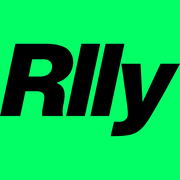
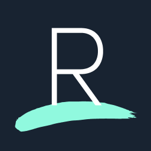
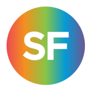

Build
Full-stack product work, client sites, React Native, and small tools that get used.
Computer Science / security / web tools
Useful software. Web tools, automation, QA, and security-shaped systems. Kept calm. Kept inspectable.
Short version: I build, test, automate, and keep asking what breaks first.
Full-stack product work, client sites, React Native, and small tools that get used.
QA, security study, CTFs, privacy instincts, and failure-mode thinking.
Scripts, agents, exports, and workflows that remove admin pain without magic theatre.
Enough context to be useful. Not a giant advertisement.

RllyDesktop app MVP, real-time tools, and the awkward glue that makes software real.

ResetIndependent testing, confidentiality, delivery ownership, and technical reporting.
Design, maintenance, uptime, updates, troubleshooting, and client trust.

StoryEdited visual material inside the Royal Holloway and NFTS StoryFutures ecosystem.
Useful chaos. Good place to learn what actually survives contact with a deadline.
Small set. Public-safe. No inflated numbers.
Client-side analysis for Instagram direct-message exports.
Client website design, development, management, and ongoing fixes.
Practical AI-assisted workflows, glue code, and product-shaped experiments.
Python, TypeScript, Flutter, docs, university work, infra, and things worth abandoning.
Not a life story. Just enough shape.
Sam is a Royal Holloway Computer Science / IT Security student building web tools, automation, data utilities, and software that makes annoying systems less annoying.
The vibe is simple: make it work, make it inspectable, then make it look clean enough that nobody has to think about the machinery.
Good. Those are usually the interesting ones.